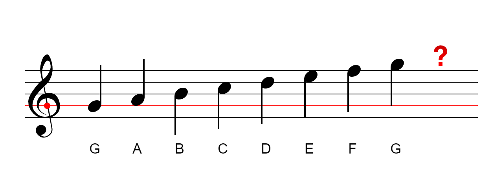
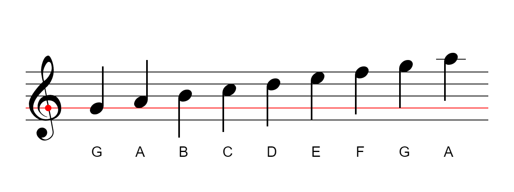
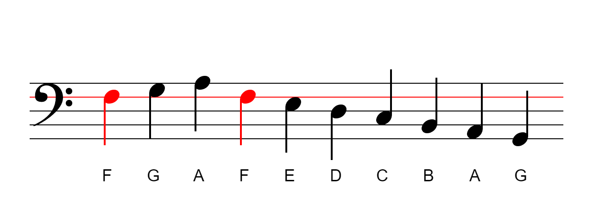

Нотний стан, ключі та леджер лінії
Нотний стан - це основа, на якій розміщуються ноти. Зазвичай, нотний стан складається з п'яти горизонтальних ліній. Кожна лінія та пробіл між лініями представляє собою білу клавішу на фортепіано:
Ключ визначає деяку послідовність, приналежність нот на нотному стані. Зазвичай використовують скрипковий та басовий ключі:
Лінія нотного стану, що охоплена серединою скрипкового ключа, визначає ноту Соль (G). Кожна наступна лінія та пробіл після ноти Соль відтворює гаму із семи нот:
Що робити, коли не вистачає місця для запису високих або низьких нот? Для цього домальовують спеціальні леджер лінії (додаткові строкові регістри). Тепер ми можемо додати ноту Ля за межами початкового нотного стану:
Аналогічно, лінія нотного стану, що охоплена серединою між двома крапками басового ключа, визначає ноту Фа (F):
Часто використовують нотні стани скрипкового та басового ключів разом: